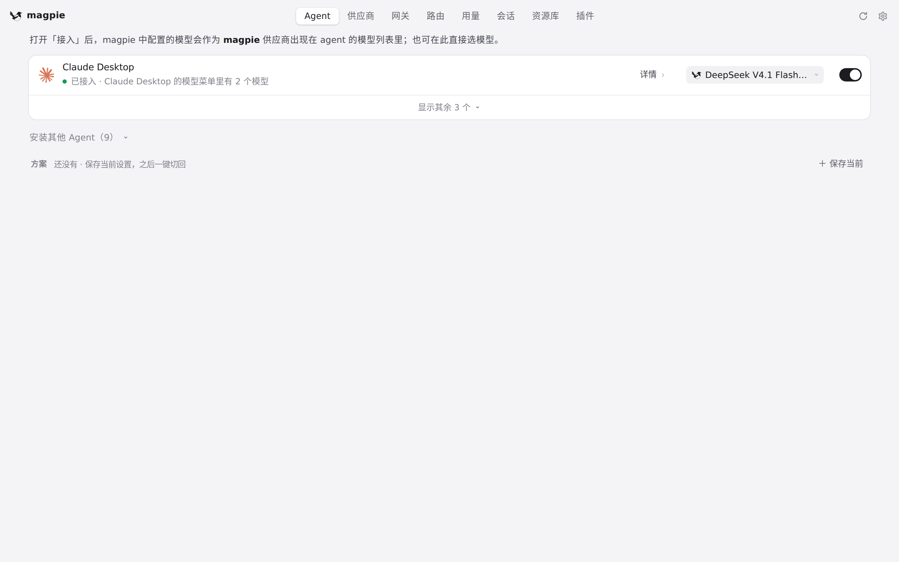
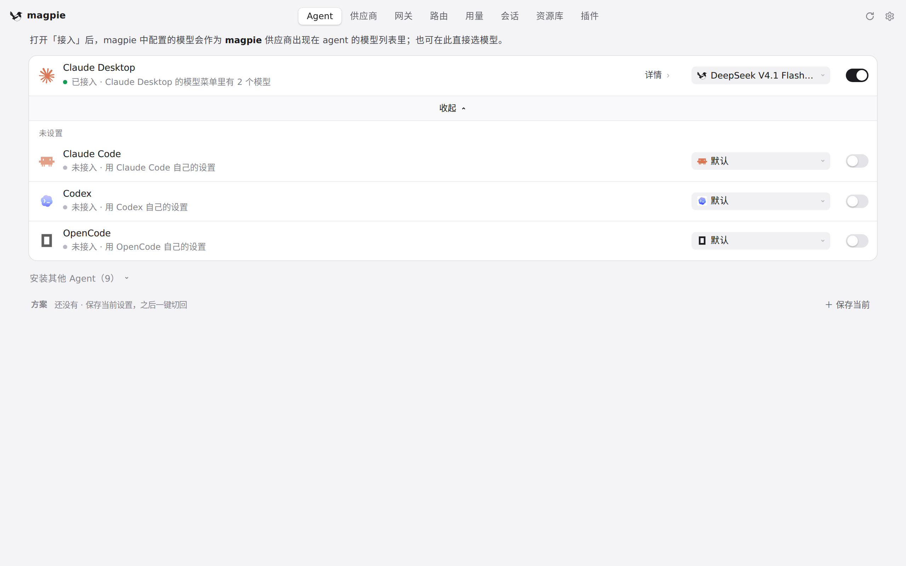
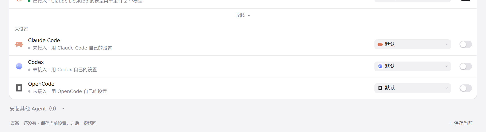

#930 界面预览
commit de51876 · 回到 PR · Agents 页里 Codex 行的版本号上多了一句悬停说明：app.js 把后端新给的 note 拼到版本号元素的 title 末尾，i18n 为它补了中文、日文、德文；其余改动（Windows 上从原生 .exe 旁的 npm .cmd 认出安装方式、更新后把 .exe 重新硬链接到 npm 装的文件）都在后端，界面上没有新增元素或按钮。
红线是鼠标走过的轨迹，红色圆环是一次点击；底部文字是这一步在做什么。空格暂停，← → 逐段查看。

Codex 版本号上的悬停说明 · Agent 页列表：先看这里有哪些 Agent

Codex 版本号上的悬停说明 · 展开后的 Agent 列表，看 Codex 这一行

Codex 版本号上的悬停说明 · Codex 行：本机没有检测到 Codex CLI，所以只有名字和模型选择，没有版本号（也就没有那句悬停说明）